- Overview
- The Users Tab
- Users
- Altering the User's List
- Creating New Users
- User Account Summary
- Customizing User Information
- Editing User Information
- Deleting Users
- Enabling/Disabling Users
- Assigning Groups to Users
- Assigning Authentication Sources to Existing Users
- Groups
- Departments and Sub-Departments
Overview
Only people who are registered as users have rights to access ProcessMaker. Those users can be organized into groups and departments. The type of activities which users can perform and the interface which users see is determined by their roles.
The Users Tab
To administer users, groups and departments, login as the "admin" or another user who has the PM_USERS permission in his/her role. Then, go to the Users tab in the sidebar under the ADMIN menu:

- User: A user account in ProcessMaker, which usually represents a person in your organization, but can also represent an account with special privileges such as the "admin" account.
- Groups: Users can be assigned to zero, one, or more groups. A group of users simplifies the assignment of users to tasks. For example, a "Help Desk" process may involve a pool of customer support clerks, all belonging to a group named "Customer Support".
- Departments: Arranges users under a hierarchical organizational structure. A user can only belong to one department.
- Roles: Make it possible to define customized roles with different levels of permissions, so that the functions and privileges of different users can be easily controlled and managed.
- Authentication Sources: Defines external user authentication sources such as LDAP or Active Directory to be used by ProcessMaker. External authentication allows users to use the same username and password across multiple applications.
- User Experience: This is an option to use a simplified interface for a cases Inbox. User Experience is available in version 2.0.37 and later. See: User Experience
Users
To see the list of users registered in the current workspace, go to ADMIN > Users > Users.

The following columns provide information about the user accounts:
- User Name: Displays the username, which is used to login to ProcessMaker and identify the user.
- Full Name: Displays the last and first name of each user.
- Status: Displays the status of the user: Active, Inactive or Vacation
- Role: Displays the current role of each user account. There are three default roles: PROCESSMAKER_OPERATOR, PROCESSMAKER_MANAGER and PROCESSMAKER_ADMIN. User accounts assigned the PROCESSMAKER_ADMIN role are enabled to create, modify or delete existing processes. User accounts assigned the PROCESSMAKER_OPERATOR role are meant for production mode, with access limited to the HOME interface. Additional roles can be defined to give users a different set of permissions.
- Department: Displays the department which the user belongs to.
- Last Login: Displays the last time the user logged in.
- # Cases: Displays the number of case that the user has participated in (i.e., been designated to work on).
- Due Date: Displays when the user's account is scheduled to be deactivated.
To search for users, use the field in the upper right side of the users list window:
- Search: To find users, enter text found in the full name, username or emails of users. After entering text in the Search box, press Enter to filter the list of users. To remove the filter, delete the text and press Enter again. To do a wildcard search, use "_" (an underscore) to represent any single character and "%" (a percent sign) to represent any number of characters including spaces and zero characters. For instance, "am%o" would find "Bamos Andrew", "Amy@processmaker.com" and "Ram Powell". To search for the literal characters "_" and "%", use "\_" and "\%". Note that the search is case insensitive.
Altering the User's List
By default users are listed according to the order they are found in the wf_WORKSPACE.USERS table in the database, but the table can be resorted by a particular column by clicking on the column's header. To change whether the column is sorted in ascending or descending order, click on the down arrow to the right of the header label and select Sort Ascending or Sort Descending from the dropdown menu.

To change which columns are displayed in the user's list, click on the down arrow in a column's header and select Columns from the dropdown menu. Then, mark or unmark the checkboxes for the columns to be displayed in the list.
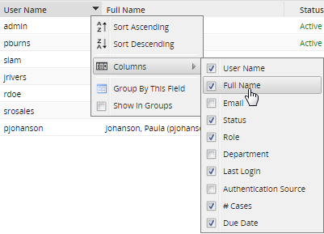
Creating New Users
New users can be created inside the ProcessMaker interface or by importing them from an external authentication source such as LDAP or Active Directory.
To create a new user inside the ProcessMaker interface, go to ADMIN > Users > Users and click on the "New" button in the toolbar.
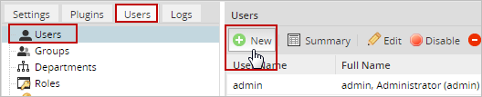
Fill out the following form. All required fields are identified by an asterisk (*).
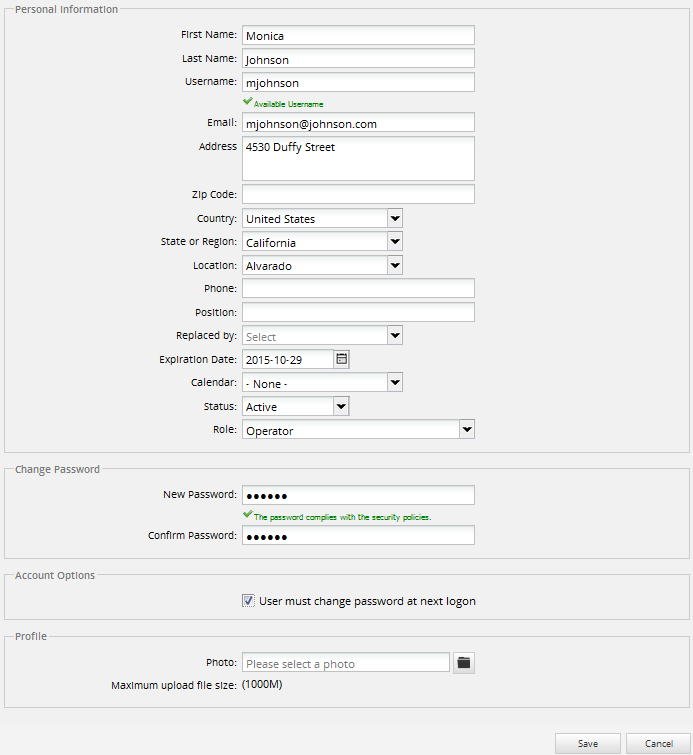
Personal Information:
- Username / User ID: The account name that should be provided when the user logs into the system. Usernames can contain letters, numbers and underscores. Usernames can also contain uppercase characters, but they are not case sensitive when logging in.
Note: In version 2.8.0, this field's name was changed from User ID to Username
Note: In version 2.4.2 and later, usernames can start with a number, such as "01John", but in previous versions this was not allowed.
ProcessMaker will verify that the username isn't already being used by another user:
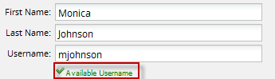
If the username is assigned to another user, a red error message will be displayed:

- E-mail: The email address of the user, which can be used to deliver e-mail notifications concerning cases.
- Country: If a country is selected which has a known set of locations, then two extra dropdown boxes will appear for State or Region and Location. For other countries, enter the location information in the Address field.
- Expiration date: The date when the user will no longer be allowed to login ProcessMaker. The expiration date helps protect an organization's date by preventing old users from accessing ProcessMaker.
- Replaced by: Choose another user from the dropdown list, who will replace the user when his/her status changes to "Inactive" or to "On Vacation". All the cases currently assigned to the user will be reassigned to the replacement user. For more information, see Using Replaced By below.
- Calendar: Select the user's calendar, which determines the working hours for the user and calculates the due date for tasks.
- Status: If set to Active, the user is permitted access to ProcessMaker. If set to Inactive, the user is denied login access and will not be assigned to work on any new cases, until the status is changed back to Active. If set to "Vacation", then the user's account will be inactive and will not be assigned to any new cases until the next time that the user logs into ProcessMaker. After logging in, the user will again be available to be assigned to new cases, but the status will still be listed as Vacation. Note that only a user such as the "admin" who has the PM_USERS privilege in his/her role may change the status of a user.
- Role: Select the user's role, which determines what functionality and interfaces the user can access in ProcessMaker. ProcessMaker provides the default roles PROCESSMAKER_OPERATOR,PROCESSMAKER_MANAGER and PROCESSMAKER_ADMIN, but other roles may be created for more customized permissions.
Change Password
- Password: A string of at least 5 characters, which can include spaces and symbols. If the second password doesn't match the first password or the passwords don't meet the set requirements, then a red error message will appear in version 2.0.42 and later/span :
Otherwise, if both of the passwords match and the passwords meet the requirements:
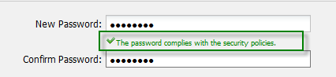
Account Options
Available Version: Hotfix 2.5.2.4 and ProcessMaker Community version 2.8.0
If needed to force user to change his password at next login, check the option "User must change password at next logon". When the user enters his credentials the Change Password Form will display:
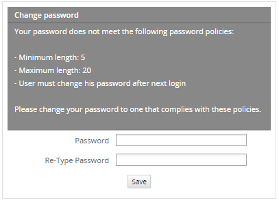
It is not necessary to include any additional configuration in order to force users to change their passwords.
Profile
- Photo: It is possible to upload a photo profile, it must be no more than 32 Mb. It supports .png, .jpg, .gif extensions. Click on to browse a photo form the computer and upload it on the user's profile.

After filling in the fields, click on Save to create the new user account in ProcessMaker.
User Account Summary
The User page in the admin console shows information for each user when you click on the  Summary option. It will show a summary of the User Information and statistics about the number of cases in which the user has participated. Enable this option by clicking on the name of the user:
Summary option. It will show a summary of the User Information and statistics about the number of cases in which the user has participated. Enable this option by clicking on the name of the user:

The User Summary displays the following information:
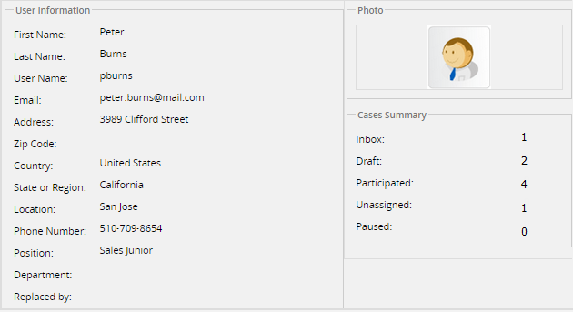
- Summary Tab:
- User Information: Displays the user's names, address, phone numbers, etc.
- Case Summary: Displays information about the status of the case in which user has participated.
- Photo: If a photo was uploaded of the user, it will be displayed. Note: This option is available in version 2.5.0 and later.
- Groups Tab: Displays the groups to which the user belongs. Note that users can only be a member of one department, but be members of multiple groups.
- Authentication Tab: Displays the authentication source of the user.
Customizing User Information
Using Replaced By
The Replace by field designates another user, who will replace the user when his/her status changes to Inactive or Vacation.
The following example demonstrates how replaced by works:
- Create a process with at least 2 tasks.
- Create three users, e.g. "John Martz", "Amy Newman" and "James Austin". Assign John and Amy to the first and second tasks, respectively.
- Edit the user profile of Amy Newman and select James Austin in the replace by field. When Amy Newman is Inactive or On Vacation, James Austin will replace her, taking her cases.
- Now start a case with John Martz. Then, change Amy Newman's status to Inactive, so when a case is routed from first task to second task, the case will be assigned to James Austin, since Amy Newman now has an Inactive status.
Considerations Before Using Replaced By
Take the following into consideration:
- The Replace by function does not work if no user is selected in the Replace by field in the user's profile.
- The functionality of Replaced by has no effect in tasks with the Self Service or Self Service by Value assignment rules configured. In these types of assignments, no user is assigned to the task by default.
- If assigning a group to a task, make sure that the users configured to replace other users are included in that group. If individual users are assigned to that task, the Replace by won't work.
Editing User Information
In ProcessMaker, there are different ways to edit user information. As follows you will find the options, you can choose the one that best suits your requirements:
- Using the User Interface.
- By accessing the Summary Option.
- By accessing the User Options located at the upper right side of the screen.
Using the user interface
Login as the "admin" or another user who has the PM_USERS permission in his/her role. Then, go to the Users tab in the sidebar under the ADMIN menu, and select the user you want to edit, the Edit option will enable, if no user is selected this option will be disabled.
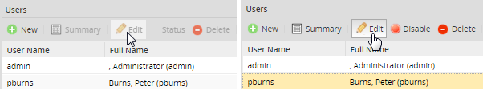
Click on Edit and the form used to create the user will open with the current information of the user. Make the necessary changes and save them.
Note: Only the user with PROCESSMAKER_ADMIN role is able to change the role of a user.
Accessing the summary options
Available Version: From 2.0.44 - 2.0.45 on.
It is possible to edit the user information, a new Edit button was added:

By clicking on it, it will redirect to the form where the information of the user may be changed.
Accessing the user options
At the upper right side of the screen, you will find the user name who you are logged in, if you click over the name, you will be redirected to the user information section. Only users who has the PROCESSMAKER_ADMIN role could have the edit option at the end of the form:

Deleting Users
In order to delete a user's account, two conditions must be met:
- The user's account can't be a member of any group.
- The user's account can't have any assigned or completed activities.
It is generally not recommended to delete user's accounts, since the user's record should be maintained for historical purposes. Instead, it is recommended to deactivate the user's account by switching its status from Active to Inactive.
Enabling/Disabling Users
From version 2.0.44 it is possible to enable or disable only from the user list without changing some data on the database, this will be helpful if the user does not need to be deleted, it saves time on creating the user again.
Before selecting an user from the list, the option Status will be displayed as an inactive option:
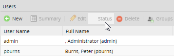
Select an user from the list and the Status option will change to Disable option:

Click on that option and the user will have the label Inactive:
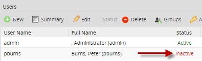
To enable the user click on the Enable option from the menu:

If the user who will be disabled is assigned into a case a message appears indicating the the user has cases assigned. In this case, if the user is disabled, a reassign option has to be defined in the process to reassign the task.
Assigning Groups to Users
Form version 2.0.40 it is possible to assign groups to users directly from the user list:
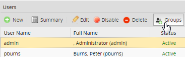
By choosing one user from the list, the Groups option will enable. Click on that option an a window will open with the groups assigned for that particular user.
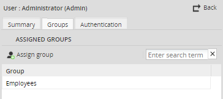
To assign groups click on the button 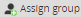 and a divided window will display, on the left column the Available Groups will be listed and on the right column the Assigned Groups will be listed:
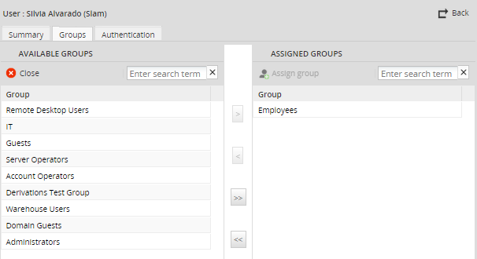
Select a group and click on > to assign a group to the available groups list, click on >> to assign all groups.
Assigning Authentication Sources to Existing Users
From version 2.0.43 the Authentication Source can be assigned from the user list. Choose an user from the list and the Authentication; will be enabled:
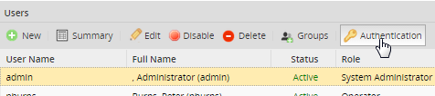
For more information of this option refer to this documentation.
Groups
Groups are a way to organize users and to simplify the assignment of tasks to multiple users. In the example of the Purchase Request process, the task of "Initiate task" could be assigned to the "Employees" group, which would include everyone in the organization. In that way, anyone in the organization would be able to start a Purchase Request case. If the organization has 2 accountants and both are assigned to the "Generate Receipt" task, then an "Accountants" group could be created and assigned to the task rather than assigning each accountant individually. Assigning groups, rather than individual users will eliminate a lot of hassle for the designer of processes, since it can be difficult to remember to include every individual user when assigning tasks.
Assigning tasks to groups rather than to individual users is much more flexible, since each process doesn't have to be modify when user accounts are deactivated or modified. Groups can be very convenient when there are frequent changes in personnel in an organization. If tasks assigned to a particular manager in dozens of processes, when that manager is transferred, each task will have to be reassigned to the new manager. In contrast, if the tasks are assigned to the group "Manager", then the only change will be to switch the one user in the group.
Creating Groups
To see the list of groups, go to ADMIN > Users > Groups.
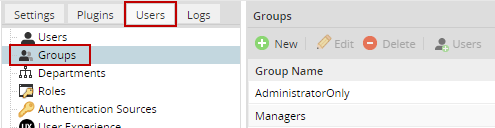
To create a new group, click on the New link at the top left of the list of groups. In the dialog box, enter the "Name" of the new group.

After creating a group, it will appear in the list of groups.
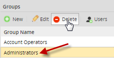
Activate and Inactivate Groups
To edit a group's name and status, first select the group in the list, then click on the Edit button in the toolbar. Likewise, a group can be removed, by first selecting it, then clicking on Deletein the toolbar.
- Note: In version 2.8.0, a validation was added to verify that a group is not assigned to a task before deleting it.
Set the Status to Active if the group is currently in use, otherwise set to Inactive. If Inactive no tasks which have been assigned to the group can be executed. Note that when a user's status is set to Inactive, he or she can't login or use ProcessMaker. When a group's status is set to Inactive, however, users assigned to that group can still login and use ProcessMaker. They just can't execute any tasks which are assigned to the group.
- Note: Before version 2.0.43, when a group was set as Inactive, it disappeared from the list. The only way to reactivate it was to manually change the status of the group from'INACTIVE' to 'ACTIVE' in the wf_WORKSPACE .GROUPWF.GRP_STATUSfield in the database.
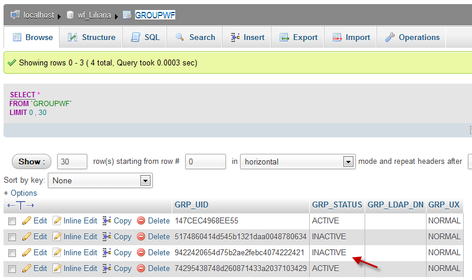
In version 2.0.43 and later, when a group is set as Inactive, the status will change on the list as Inactive, but it will not disappear from the list:
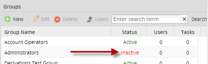
Assigning Users to Groups
A user account can belong to zero, one, or many groups; and groups can have multiple users. In other words, there is a many-groups-to-many-users relationship. The Users column displays how many users are assigned to a group, and on the Tasks column show how many tasks the group has been assigned to.
To add a user to group, first select the group in the list. Then, click on the Users button at the top of the list. A new window will appear:
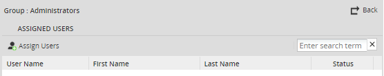
Click on  to add users into the selected group.
to add users into the selected group.
On the left side, the list of available users will display,
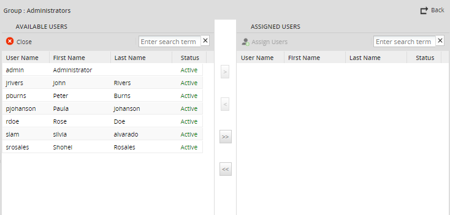
To assign an user, double click on the user and he/she will be automatically send to the right panel. Another option, select the user and click on the arrow ">" to sent it. To unassigned a user click on the user and double click on it or click on the arrow "<".
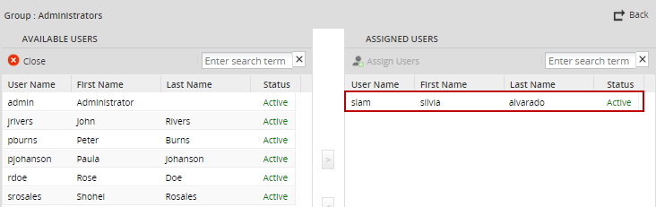
To do a case-insensitive search for a particular user, enter part of the first or last name of the user in the "Search" textbox and press Enter. To see all the available users again after doing a search, clear the "Search" textbox and press Enter.
To remove a user from an existing group, click on the Remove link of the selected group on the left side of the panel and confirm in the popup question box to remove the user.
Departments and Sub-Departments
Departments are another way to organize users based on an hierarchical organization that determines the manner and extent to which roles and responsibilities are delegated, controlled, coordinated, and how information flows between levels of hierarchy in a company.
In ProcessMaker, departments should represent the units in the organization and the employees of each entity should be assigned to these departments. Creating the departments and setting the managers for each department will indicate to whom employees should report when submitting information that needs revision or approval from a supervisor according to the hierarchical organization of the company.
A sub-department in ProcessMaker represents in the structure of a company, a unit that depends of another. Creating sub-departments in ProcessMaker also gives administrators a graphical representation of the structure of the company.
To manage departments and sub-departments, login to ProcessMaker with a user such as the "admin" who has the PM_USERS permission in his/her role. Then go to ADMIN > Users > Departments to see a list of the departments and the number of users assigned to them.
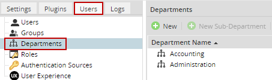
For departments, take into account the following:
- Users can only be assigned to one department unlike groups that can be assigned to one or more groups.
- Departments can not be assigned to tasks in their assignment rules.
- Processes in ProcessMaker work with departments in the assignment of the next task using the "Reports To" assignment method. In this method the next task is assigned to the immediate supervisor of the employee that worked the last task.
The manager of a department is automatically set in the Reports to field for all the other users in the Department. If the department is a top-level department (meaning that it has no parent department), then the Reports to field for the manager will be left blank. If the department has a parent department, then the manager's Reports to field will be set to the manager of the parent department.
When the manager of a department is changed, the Reports to field will automatically be updated for all the users in the department and for any supervisors in sub-departments.
Note: Departments in ProcessMaker can have a user assigned as "manager" or not. When a sub-department does not have a manager assigned, and the next task has the Reports To assignment method, the same employee is assigned to the next task.
Creating a New Department
To create a new department, click on the New button. Enter the name of the new department and click on Save.
To create a sub-department under a parent department, first select the parent department in the list and then click on New Sub-Department. Enter the name of the new sub-department and click on Save.
The sub-department will appear under its parent department in the list:

Editing Department
To edit a department:
- Select the department from the list and click on the Edit option in the menu above the list.
- In the form to edit the department define the following fields:
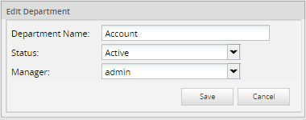
Department Name: A label to identify the Department's name.
Status: This drop-down box field is to set the department's field to active or inactive.
Manager: This drop-down box field gets a list of users from the department. The default value is "No manager". Only one user can be assigned as manager.
Assigning Users
To assign users to a department, go to ADMIN > Users > Departments to view the list of departments. Select a department and click on Users. The list of already assigned users will display in the window that opens:

Click on the button  to add users to the department. In the window that opens, the left panel has the list of available users who aren't yet assigned to any department. The users assigned to the department are listed in the right panel.
to add users to the department. In the window that opens, the left panel has the list of available users who aren't yet assigned to any department. The users assigned to the department are listed in the right panel.
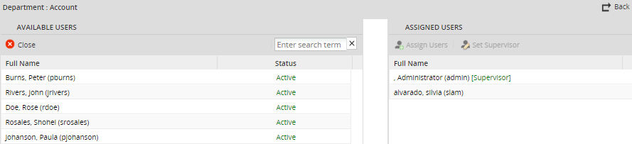
Select user(s) in the list of available users and click on ">" to add them to the department. To add all the available users to the department, click the ">>" button. If the department has no users, the first user assigned to the department will automatically be set as the department's Supervisor by default. See the Reports to function.
To remove users from a department, select user(s) in the left-hand list. Then click on "<" to remove the user(s) from the department. To remove all users from the department, click on the "<<" button. Remember that users can only below to one department at a time, so first remove a user from one department before adding that user to another department.
It is also possible to select users and drag and drop them from one panel to another in order to add or remove users from the department.
Deleting Departments
To delete a department, go to ADMIN > Users > Departments and select a department in the list and then click on Delete. In the confirmation dialog box, click on OK to delete the department.
Note: If a department has sub-departments, first delete the sub-departments before deleting the department.
Setting the Department's Manager
To assign a user as "Manager" in a department or sub-department, first select the Department (or sub-department) and then click on Users. In the user list, select a user and then click on Set Manager.
To remove a manager from a department, click on No Set Manager.
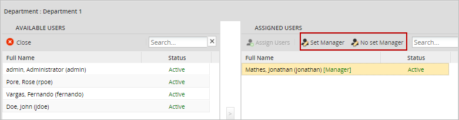
In the list of departments, the username of the manager and the number of users assigned to each department will be displayed:
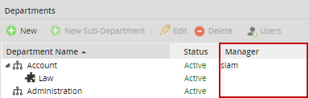